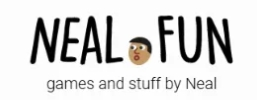

Neal Fun

Neal.fun é uma coleção de projetos interativos, criada pelo programador norte‑americano Neal AgarwalSAPO Tek+1.
O próprio site se apresenta como “onde eu faço coisas na web”, reunindo jogos, visualizações e ferramentas curiosas (Gerado por IA)